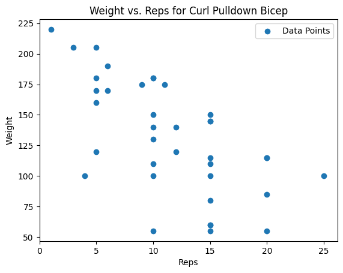

Data-Driven Progressive Overload
kaiserlift software package to do it yourself (pip installable)
Why keep doing 10 rep sets? Are you pushing in a smart way?
The core idea I'm exploring is simple: I want a science-based system for determining what's the best workout to do next if your goal is muscle growth. The foundation of this is progressive overload—the principle that muscles grow when you consistently challenge them beyond what they're used to.
One of the most effective ways to apply progressive overload is by taking sets to failure. But doing that intelligently requires knowing what you've done before. If you have a record of your best sets on a given exercise, you can deliberately aim to push past those PRs. That history becomes your benchmark.
Now, there's another dimension to this: rep range adaptation. If you always train for, say, 10 reps, your muscles can get used to that rep range—even if you're still pushing for PRs. Switching things up and going for, say, 20-rep maxes (even with lighter weight) can stimulate growth by forcing the muscle to adapt to new challenges. Then, when you go back to 10 reps, you might find you've blown through a plateau.
To make this system more precise, I propose using a one-rep max (1RM) equivalence formula—a way of mapping rep and weight combinations onto a single curve. It gives you a way to compare different PRs across rep ranges. Using that, you can identify which rep range you're weakest in—meaning, which PR has the lowest 1RM equivalent. That's where your next opportunity lies.
Here's how I operationalize it:
- Collect your full workout history for a given exercise—every weight and rep combo you've done.
- Calculate the Pareto front of that data. This is the set of "non-dominated" performances: the heaviest weights at each rep range that can't be beaten in both weight and reps at the same time.
- For each point on the Pareto front, compute the 1RM equivalent using a decay-style formula.
- Identify the Pareto front point with the lowest 1RM equivalent—that's your weakest spot.
- Now, generate a "next step" PR target: a new set that just barely beats that weakest point, by the smallest reasonable margin (e.g., +1 rep or +5 lbs). That becomes your next workout goal.
This method gives you a structured, data-driven way to chase the easiest possible PR—which is still a PR. That keeps you progressing without burning out.
You can extend this concept across exercises too. Let's say it's biceps day. Instead of defaulting to the same curl variation you always do, you can rotate in a bicep exercise you haven't done recently in order to assure a new PR. This introduces variability, which is another powerful way to drive adaptation while still targeting the same muscle group.
The end goal here is simple: use your data to intelligently apply progressive overload, break through plateaus, and train more effectively—with zero guesswork.
To this end I also made an HTML page that can organize these in a text searchable way and can be accessed from my phone at the gym. This table of taget sets can be ordered by 1RPM and so easilly parsed.